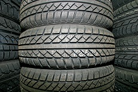

Mobile tyre replacement
Mobile tyre fitting in Hull
A flat tyre at home, at work or while you are out in Hull? Call Turbo Tyres Hull for mobile tyre fitting and help with your tyre problem.
Call 07354 772107Call to confirm availability, price and timing.
Tyre help where you are in Hull
You do not need to arrange a trip to a tyre shop before speaking to us. Tell us where your vehicle is in Hull and what has happened. We can discuss replacement tyres, a possible puncture repair or a locking wheel nut problem, then confirm whether a mobile visit is available.
- New tyres
- Part-worn tyres, subject to availability
- Puncture repair, where the tyre can safely be repaired
- Locking wheel nut removal
- Wheel balancing
Not sure which service you need? Call and describe the problem.

Finding your vehicle
For a vehicle at work or in a car park, tell us the entrance to use and whether there are access restrictions. If you are beside a road, give the road name, direction of travel and a nearby landmark when you call.
Arrange your tyre fitting
- Tell us where you areGive your postcode, address or location, and explain what has happened to the tyre.
- Check your tyre optionsHave your vehicle registration and tyre size ready if you can read it safely. Tell us if you need help with a locking wheel nut.
- Confirm before we comeWe will discuss availability, access, the price and expected timing so you can decide whether to arrange a visit.
Can you fit tyres at my home or workplace in Hull?
We offer a mobile service. Give us your location and explain where the vehicle is parked so we can check access, tyre availability and whether the work can be carried out there.
How much will it cost?
The price depends on the tyre, work required and your location. Call for a quote before agreeing to a visit.
Cannot find the tyre size?
Call with your vehicle registration and explain the problem. Only check the tyre or take a photo if it is safe to do so.
Nearby places
We also take calls from places near Hull, such as Cottingham, Anlaby, Hessle, Sutton-on-Hull and Hedon. Give your exact location so we can confirm we can reach you.
From our customers
★★★★★
Craig came out to my daughters flat tyre straight away. Nail in it. Fair price for a great job. Craig was professional, helpful and gave my daughter advice for the future…
★★★★★
What a guy. Turned up on a Sunday for me miles away from Hull. Fantastic service.
Brilliant service, went above and beyond to get my tyre sorted for me! Great value for money! Would highly recommend to anyone!
5* service! Couldn't have asked for a better service. My tyre was badly damaged on something today. I was gutted I was about to cancel my easter plans for the weekend. Until I found these guys came out within 30 mins amazing price!! Would use again!
Lads are smashing. Had an issue with one of the bolts but the chap advised us with great help. Brilliant price based on part worn fitted and come out in 10mins at 11pm. Customer service was outstanding and did the job quickly and professionally.